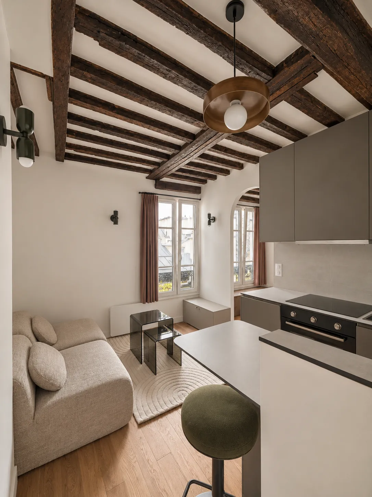
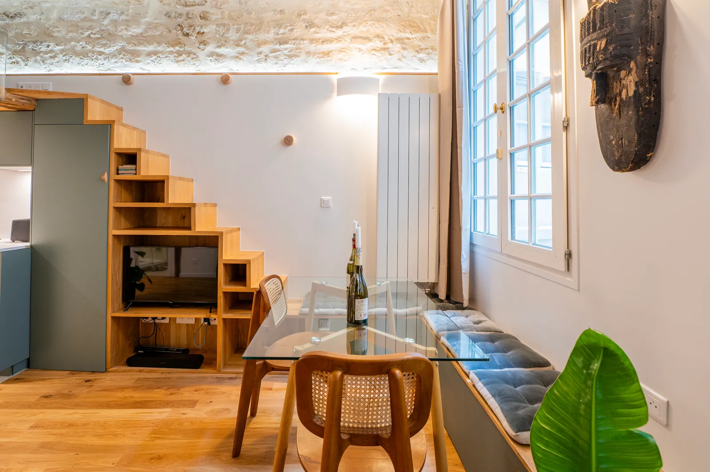
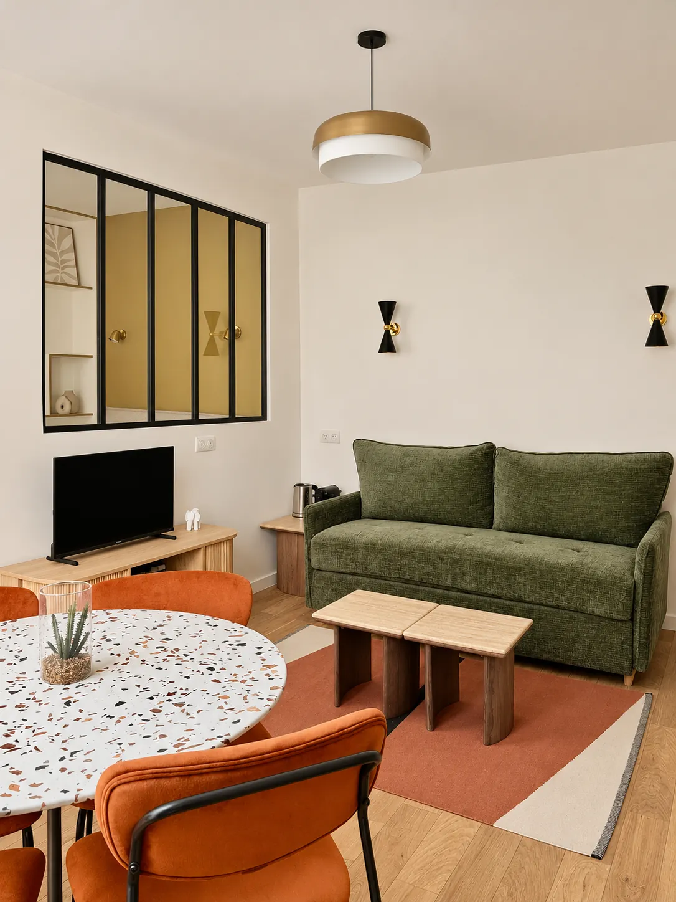
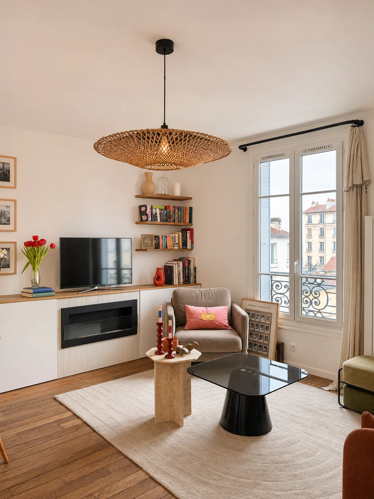
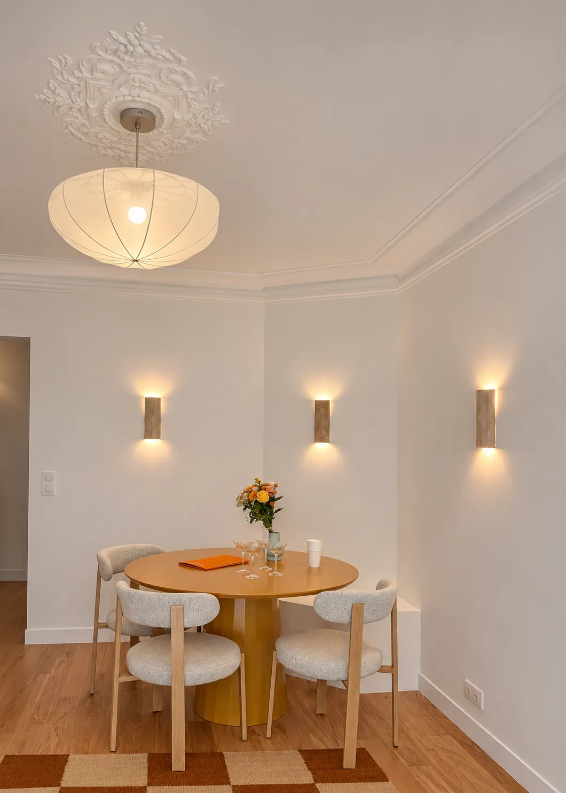
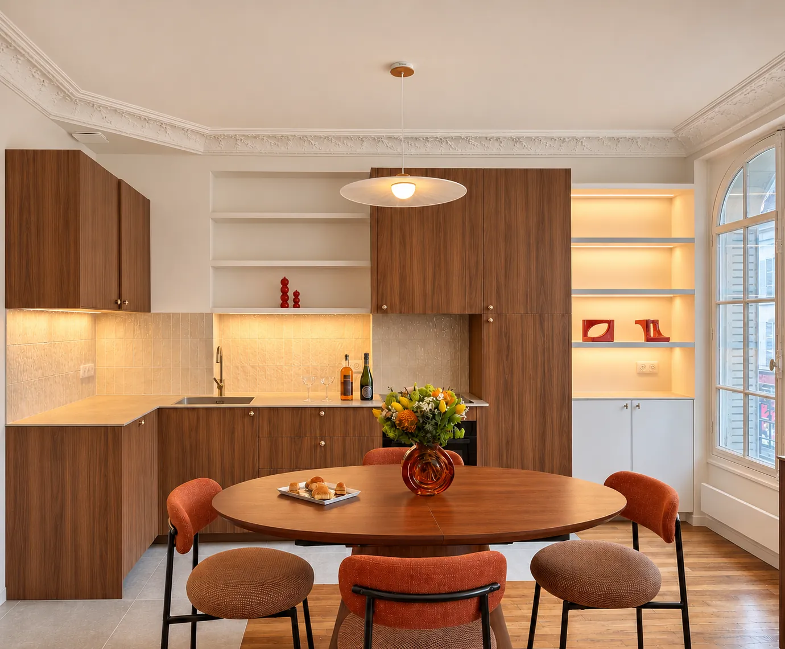
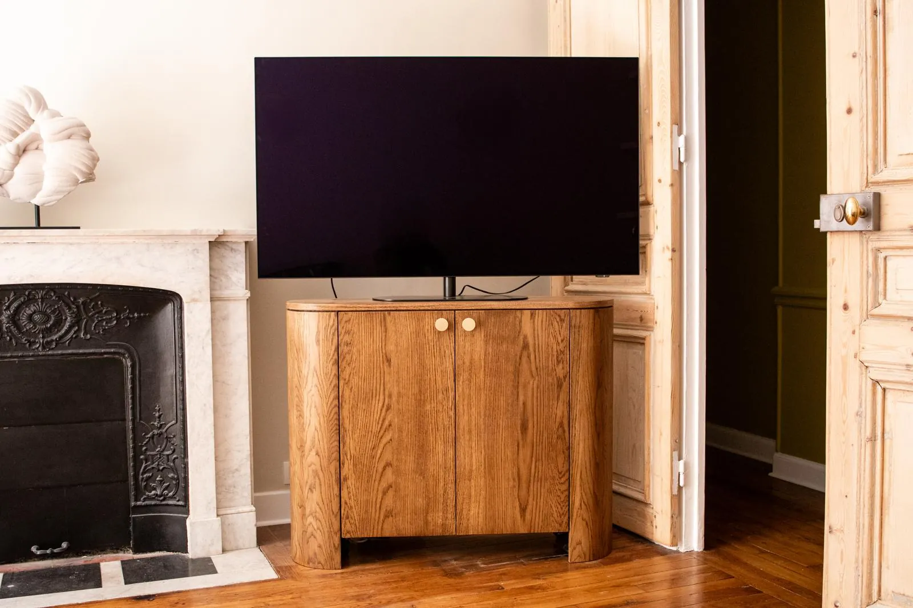
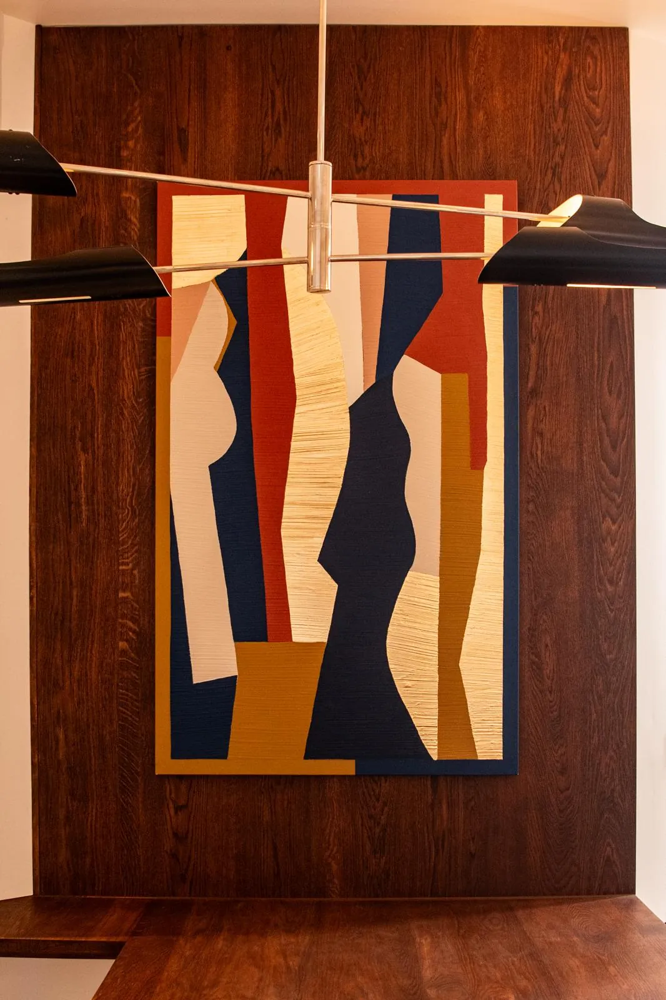

Stouls Studio / Portfolio
Portfolio de Margaux Stouls
16 projets, chacun sur sa page : les rénovations complètes d'abord, puis les rénovations partielles, puis le mobilier sur mesure.
Rénovations complètes
 Résidence principale, 130 m²
Résidence principale, 130 m²Appartement, Paris 9e

Investissement locatif, 26 m²Studio Mazarine, Paris 6e

Investissement locatif, 24 m²Studio Grands-Augustins, Paris 6e
 Investissement locatif, 27 m²
Investissement locatif, 27 m²Studio, Saint-Germain-des-Prés

Pied-à-terre, 30 m²Pied-à-terre, rue de l'Exposition, Paris 7e

Pied-à-terre, 46 m²Pied-à-terre, Montrouge
 Résidence principale, 27 m²
Résidence principale, 27 m²Appartement, Montmartre

Résidence principale, 45 m²Appartement, Lamarck, Paris 18e
 Résidence principale, 30 m²
Résidence principale, 30 m²Appartement, rue d'Enghien, Paris 10e
 Investissement locatif, 55 m²
Investissement locatif, 55 m²Appartement, Levallois-Perret
 Résidence principale, 55 m²
Résidence principale, 55 m²Appartement, Boulogne

Résidence principale, 65 m²Appartement, Bagnolet
 Résidence secondaire, 150 m²
Résidence secondaire, 150 m²Maison de campagne, Bourgogne
 Résidence secondaire, 160 m²
Résidence secondaire, 160 m²Maison à Sifnos
Rénovations partielles


Mobilier sur mesure
Des meubles dessinés pour une pièce et fabriqués par des ébénistes. Ici, un buffet et ses étagères sur poteaux en chêne tourné, et une table ronde en chêne teinté.




Visualisations 3D
Avant le début des travaux, les pièces sont modélisées en trois dimensions. Le client voit le résultat à l'écran et peut le modifier tant que changer d'avis ne coûte rien.


Plans techniques
Les plans à partir desquels les artisans construisent. Ici, les élévations cotées d'un mur de cuisine et de son îlot, avec chaque matériau et chaque équipement indiqué.


Votre projet
Dites-moi ce que vous cherchez, ou envoyez-moi l'annonce d'un appartement que vous envisagez.
D'autres réalisations sont sur Instagram @stouls_studio.